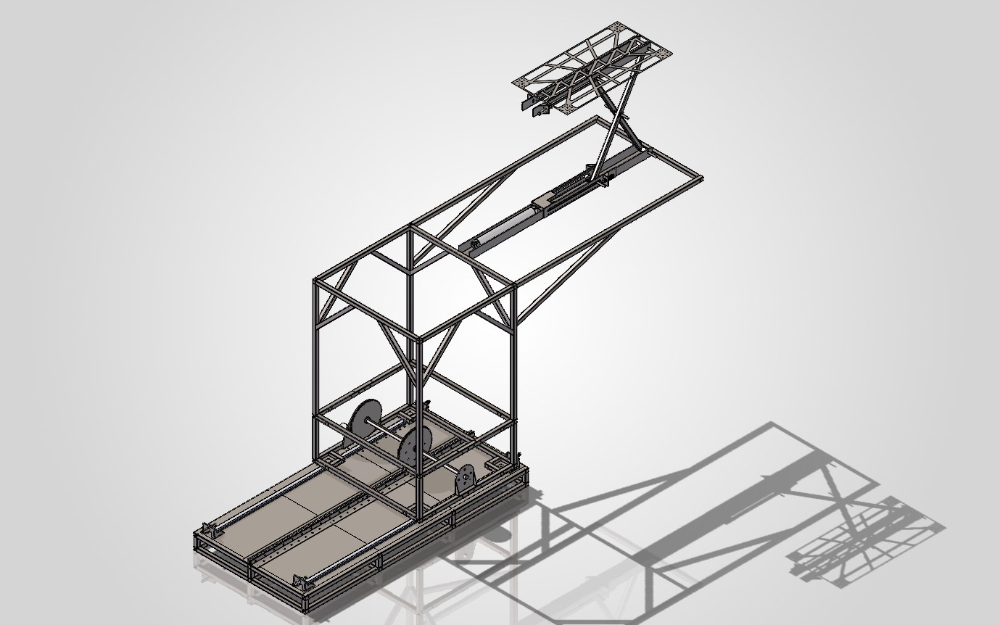
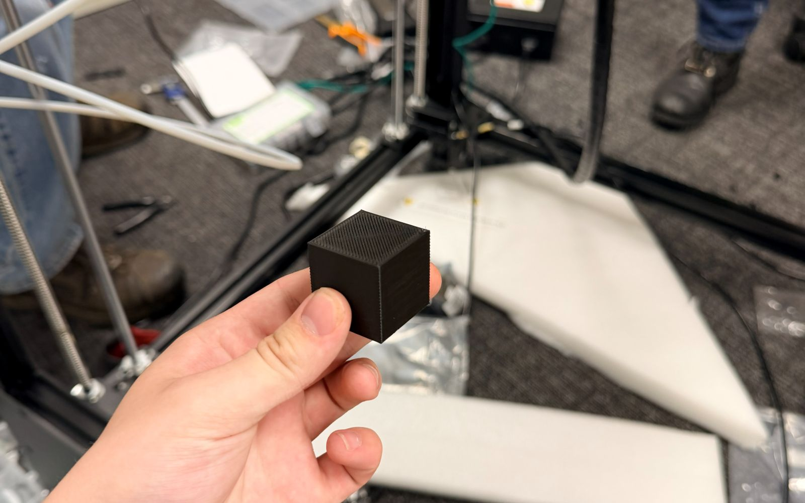

June — August 2026
CAD Engineering Intern
Formall Inc. / Clinton, TN
- Designed an automated twin-sheet plug-assist platform in SolidWorks that carries a 12 ft by 9 ft plastic sheet across an 8 ft bed in 5 seconds each direction.
- Replaced a vertical cylinder with a scissor lift after its 22 in stroke exceeded the 14 in height envelope, winning approval from all 3 engineers on the CAD team.
- Sized an 8 ft rail-guided base and 10:1 rack-and-pinion drive from calculated mechanism loads, gear geometry, and cylinder travel.
- Produced a 70-sheet drawing package covering 65 parts — 95% laser-cut sheet and tube, 5% CNC, nearly all welded.
- Cut initial drawing setup from 2–4 hours to 5–10 minutes across 3 verified projects with SolidWorks macros for drawing creation, stock sizing, and E3 callouts, correcting output by hand.
- Assembled and calibrated a Modix BIG-60 large-format printer over 40 hours, then validated it with production test prints.

